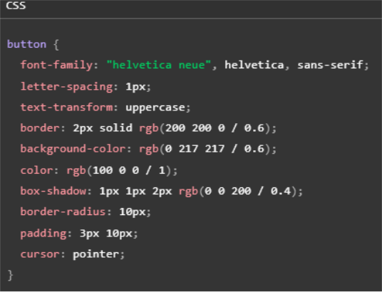
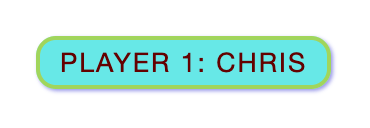
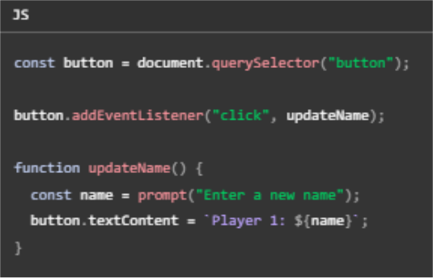

03
JavaScript
JavaScript (JS) — это мощный, высокоуровневый язык программирования, который чаще всего
используется для создания интерактивных веб-страниц. Он позволяет разработчикам добавлять
динамические элементы на сайты, такие как анимации, формы и сложные игры. JS является
неотъемлемой частью стека веб-технологий, известного как HTML, CSS и JS, где каждая технология
отвечает за свой аспект веб-страницы: HTML структурирует контент, CSS занимается стилизацией, а
JavaScript добавляет интерактивность
JS также используется в серверной разработке (Node.js), мобильных приложениях (React Native), и даже
для создания приложений для интернета вещей. Это универсальный язык, который поддерживается
всеми современными веб-браузерами без необходимости использования каких-либо плагинов. JavaScript
продолжает развиваться и получать новые возможности, что делает его одним из самых популярных
языков программирования в мире.
JS
Три слоя прекрасно выстраиваются друг над другом. Для примера примера возьмём
кнопку. Чтобы задать структуру, создадим разметку с помощью HTML:
Затем добавим немного CSS, чтобы кнопка выглядела симпатичнее:
 И наконец добавим немного JavaScript для реализации динамического поведения:
